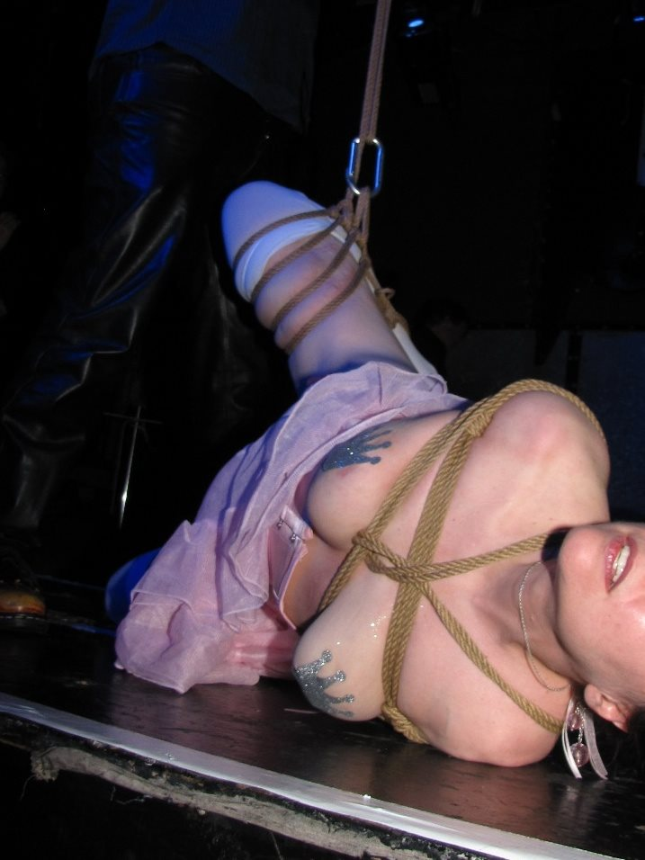

Chapter 9
My good friend Danarama has every reason to rest on his laurels. He was one of the Two Knotty Boys (world-renowned rope instructors) and has taught countless students, written books, made videos (one has more than 350,000 views on YouTube), and performed all over the world. He’s been tying people up for at least 20 years. And now he’s the director of Kink.com’s Kink University. If anyone gets to sit back with a smug look and boast about being a master, it’s him.
But does Dan do that? Nope. He is constantly curious, always seeking new information and following up on new developments, not just in the rope scene but in many areas. He still takes all kinds of classes and seems to approach learning with a beginner’s mind. He’s always working out new things. And this is, I would bet, a huge factor in what has made him such an amazingly skilled rope master. That’s why Helpful Skill No. 7 is Being Always Curious.
If you just replay all the good scene stuff and gloss over the other stuff, you’ll never improve. If you wait for rope bottoming information to come to you, you may be dusting cobwebs from your hair before getting captured in a rope web. Be proactive.
This doesn’t mean thinking negatively, by the way! Just because you strive to improve doesn’t mean you’re presently inadequate. I’m gonna go all Zen on you right now and say that you are perfect exactly as you are, in this moment. If a scene didn’t go well because the top wanted you to do something you weren’t capable of, consider it a lack of skill, experience or imagination on their part. Team sport, remember? Your partner must meet you where you are for a successful scene.
So while you’re improving, accept yourself and celebrate your unique gifts and strengths. Maybe you can’t spin upside down like a toy top on speed, but your gracefulness can light up a room. Maybe you can’t do a split or a full backbend, but you can make a connection like nobody’s business. Maybe your greatest skill right now is that sweet little sigh you make that drives your partner wild.
Remember the aspects that make you uniquely you, and don’t let other people cause you to judge yourself negatively. (This isn’t always easy when you look at photos or videos of others, but remember also that you have no idea where those people started.)
Here are a few things it’s good to be always curious about.
Part of this is physical, and part is mental. Endurance to me relates to what types of ties and sensations you can endure; stamina relates to how long you can stay in a tie.
Boosting your physical fitness level will go a long way toward helping with both; that includes both strength training (such as lifting weights) and cardio (such as jogging). Eating well is important too. Quitting or reducing smoking can help improve your lung capacity and your circulation.
I’ve also found that minimizing alcohol helps improve my sense of balance (even when I’m not actually tipsy) and helps my body recover more quickly from a rope scene. Explore methods with an athlete’s mind: Would an athlete get up off the couch, where they’ve been chowing down chips during a 2-day TV binge, and go run a marathon? Not so much.
Especially with suspensions, strengthening your core will help a lot. Try crunches, Pilates, leg lifts, Plank Pose, etc.
You can build mental endurance and stamina through practicing rope (good old R&D), meditation, learning what to expect, working on your inner demons in therapy, developing a personal pep talk, and likely in many more ways I haven’t thought of yet.
Your partner also contributes to your stamina in a scene, because adjustments and transitions can help you last longer.
The more flexible you are, the deeper and more comfortably you can go in a tied position. And the more comfortable you are, the longer you can stay in it. Explore what ties you like to do and then put together a stretching routine that targets the areas used. After the scene, it feels nice to stretch your muscles in the opposite way in which they were when you were tied.
I’m not going to recommend a specific routine, because everyone’s body is different and I’m not a fitness instructor. There are a gazillion books on yoga and stretching exercises, and you can find free instruction on YogaJournal.com and elsewhere; be curious and find stretches that work for you.
My stretching routine several times a week includes Downward Dog, Pigeon, Cow Face, Reverse Prayer, Cat-Cow, Upward Bow (Wheel), Plow, seated V stretches, lunges, shoulder and arm stretches, calf stretches, and hamstring stretches. It may sound like a lot, but the routine takes only around 30 minutes.
This goes hand in hand with building endurance and stamina, because rope can be painful. And thank goodness, because otherwise we might not get all of those lovely chemicals flowing! Learning how to take in pain and harness its energy will help you go deeper into the experience and also last longer. However…do you feel what’s coming?
Warning: Never push beyond your abilities or limits, or tolerate the kind of pain that will cause an injury.
There’s a big difference between doing breathwork to help you deal with the sensation of a challenging tie that has proper tension and placement, and trying to endure a misplaced tie or pushing beyond your abilities. Honor your limitations always.
Ways to process pain when the tie is safe and manageable:
Visualize the pain spreading to other body parts, so it thins out and becomes less intense in the localized area.
Breathe into the painful area using visualization to soften the area and put more space into it.
Know that pain has a profile of how it manifests in the body. After a minute or two, a pain that seems unbearable at first can be absorbed by the body and feel less acute—the body accepts it and moves on. During that first minute, try to step outside the pain, detach from it. I tell myself matter-of-factly, “It’s only pain.”
Sometimes the inclination to run from pain stems from things we attach to it, such as fear. If you know you won’t be injured and that you’re in control to end the scene at any time, you can let go of fear and look at pain more objectively as just a temporary condition.
Welcome the pain in, like a cool breeze on a hot day. It seems counterintuitive to welcome in something that hurts, but if you think of pain as a sensation that wants to help you reach the holy land of sub space, it becomes more of a friend and less something to endure. If the breeze metaphor doesn’t work, you could imagine it as a wave washing over you or even a magical dose of sparkling fairy dust…whatever makes the pain seem like a beneficial or even loving force.
Vocalize. It can be words, moans, barking, an “Om”—whatever sounds that take the pain outside your body. If you use this method, tell your partner ahead of time so they know what to expect.
Simply accept it. This can involve fantasy. For example, I sometimes imagine I’ve been kidnapped by my rope top, who wants to have their way with me and there’s nothing I can do about it. This takes the pressure off, takes the responsibility to “do something” about the pain out of my hands—the only choice is to give in and accept it.
In the photo below, you can see a fave fantasy game: captured princess. And if that futomomo had gone into a full suspension, it would have taken some major pain processing. (Ropework by MrKiltYou. Photo by Michael Sundin Photo.)

We discussed some ways to connect in Chapter 8, but the possibilities are endless and are unique to every person, every partnering, and every scene. The more methods you have at your disposal, the easier it will be to make connections happen when you want them to.
We’ve already mentioned yoga. True_Blue—who is not just an ethereally graceful rope bottom but a certified yoga instructor and the co-founder of our local meet-ups for suspension bottoms—points out that yoga can help with more than just flexibility, breathwork, and mindfulness. Yoga is a practice of exploring boundaries and edges, and of sometimes expanding those boundaries to reach new levels. It’s also a practice of knowing yourself, which can help you learn to recognize which edges are there to help keep you safe. All good reasons to explore yoga if you love being in rope!
We’ve mentioned tantra, meditation, and tai chi too, but almost anything can be a complementary practice to rope play if you have an open mind. Studying for an exam can help you build mental focus. Learning how to ski or snowboard can teach you balance. Swimming laps can teach you about breath management. The important thing is to step outside of rope and explore other things that will challenge you. Then you can take those newfound skills back to rope and use them to reach a new level.